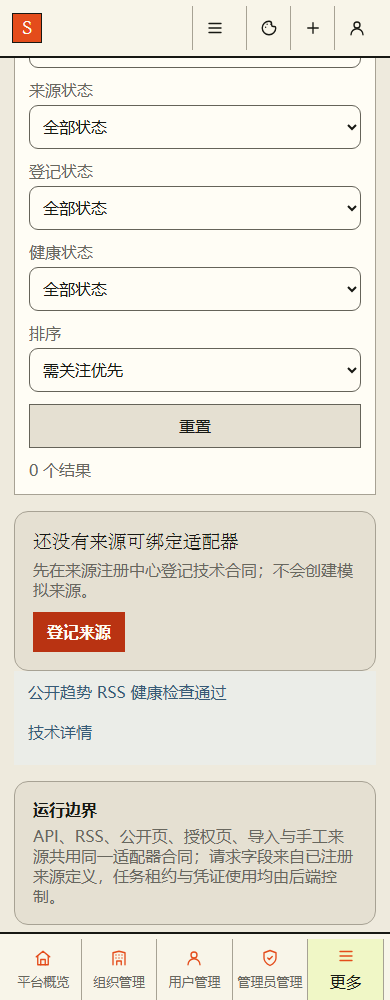
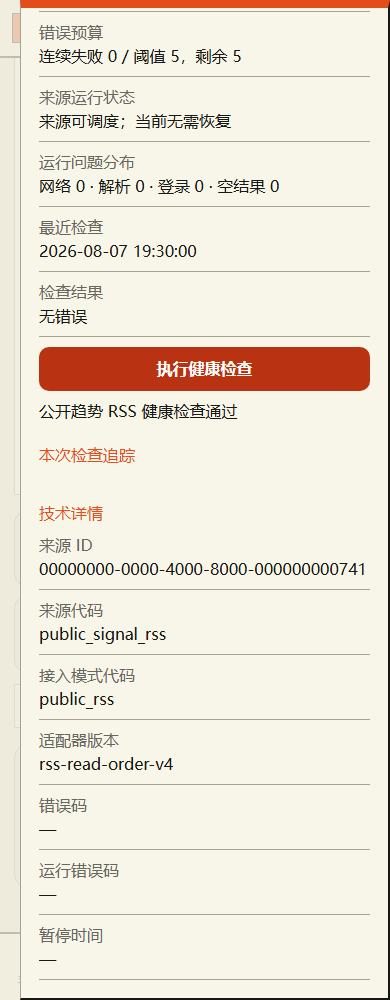
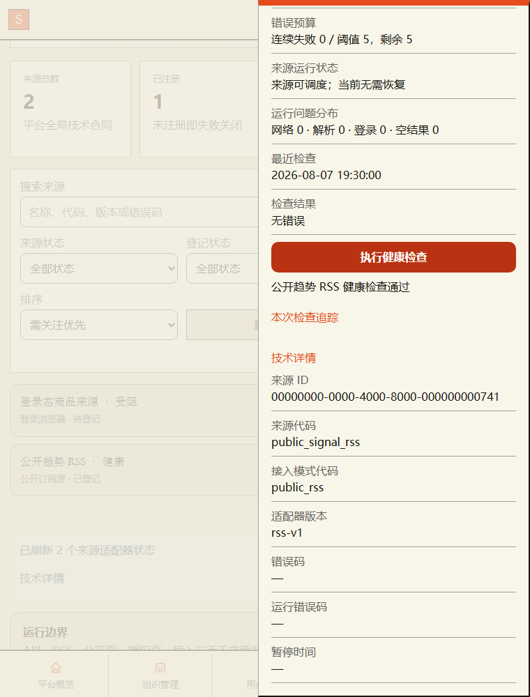
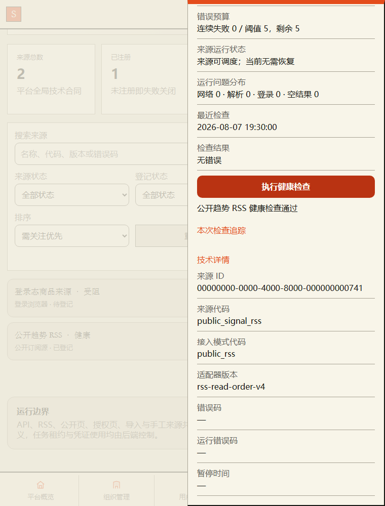
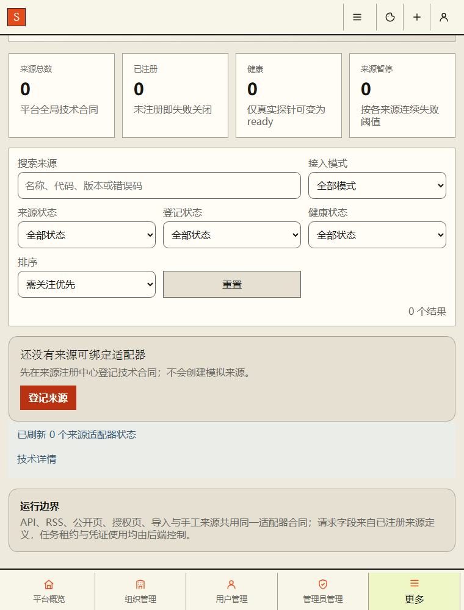
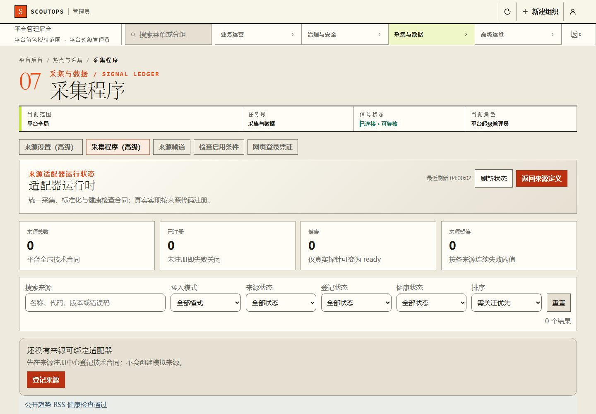
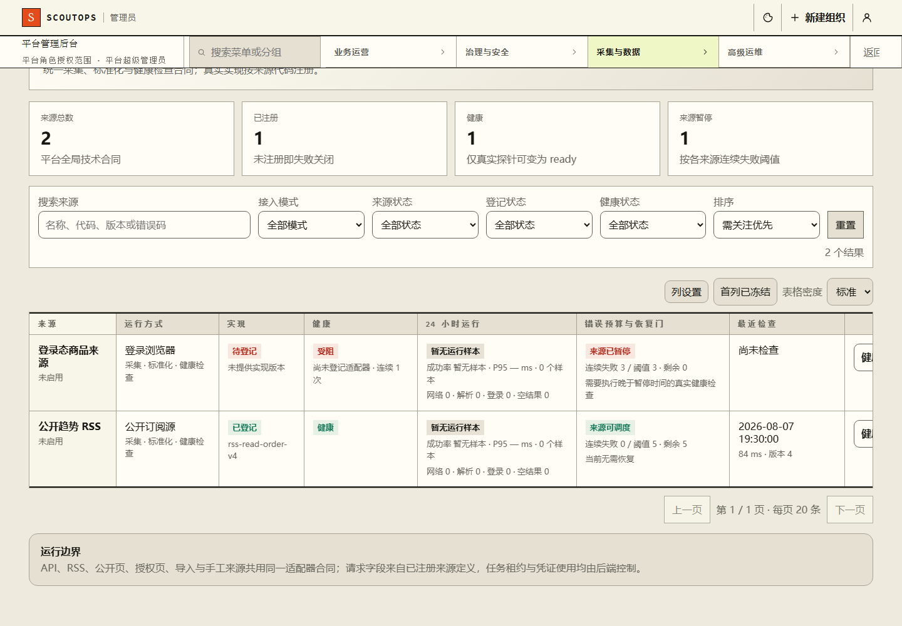
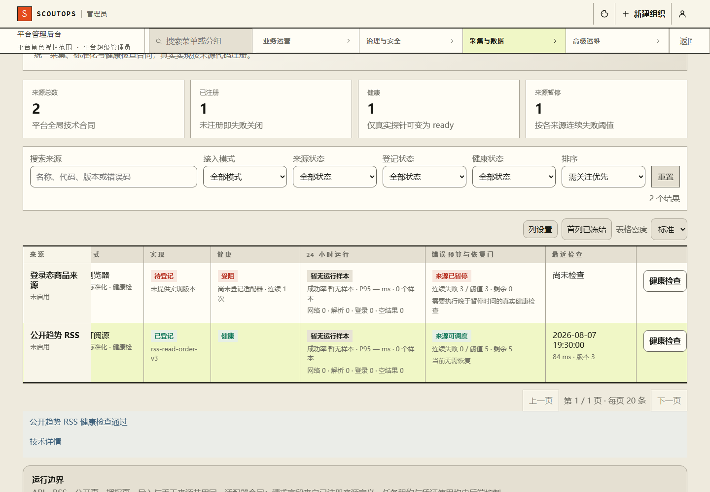
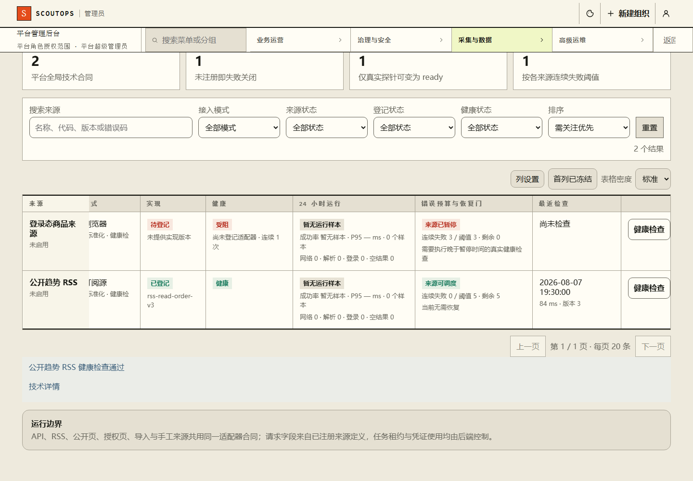

P47读取顺序修复前后
旧生产与当前实际Vue，未注入C样式；同来源版本v3/v4、旧空列表及错误均为受控样例，不代表真实采集或生产验收。
baseline · 390 · pre-success · after-obsolete-read
baseline · 390 · pre-success · fresh-read

baseline · 390 · pre-error · after-obsolete-read

baseline · 390 · pre-error · fresh-read

baseline · 390 · during-early · after-obsolete-read

baseline · 390 · during-early · fresh-read

baseline · 390 · during-late · after-obsolete-read
baseline · 390 · during-late · fresh-read

baseline · 760 · pre-success · after-obsolete-read

baseline · 760 · pre-success · fresh-read

baseline · 760 · pre-error · after-obsolete-read
baseline · 760 · pre-error · fresh-read

baseline · 760 · during-early · after-obsolete-read
baseline · 760 · during-early · fresh-read

baseline · 760 · during-late · after-obsolete-read

baseline · 760 · during-late · fresh-read

baseline · 1440 · pre-success · after-obsolete-read
baseline · 1440 · pre-success · fresh-read

baseline · 1440 · pre-error · after-obsolete-read
baseline · 1440 · pre-error · fresh-read
baseline · 1440 · during-early · after-obsolete-read

baseline · 1440 · during-early · fresh-read

baseline · 1440 · during-late · after-obsolete-read
baseline · 1440 · during-late · fresh-read

current · 390 · pre-success · after-obsolete-read
current · 390 · pre-success · fresh-read

current · 390 · pre-error · after-obsolete-read

current · 390 · pre-error · fresh-read

current · 390 · during-early · after-obsolete-read

current · 390 · during-early · fresh-read

current · 390 · during-late · after-obsolete-read

current · 390 · during-late · fresh-read
current · 760 · pre-success · after-obsolete-read

current · 760 · pre-success · fresh-read

current · 760 · pre-error · after-obsolete-read

current · 760 · pre-error · fresh-read

current · 760 · during-early · after-obsolete-read

current · 760 · during-early · fresh-read
current · 760 · during-late · after-obsolete-read
current · 760 · during-late · fresh-read

current · 1440 · pre-success · after-obsolete-read

current · 1440 · pre-success · fresh-read

current · 1440 · pre-error · after-obsolete-read

current · 1440 · pre-error · fresh-read

current · 1440 · during-early · after-obsolete-read

current · 1440 · during-early · fresh-read

current · 1440 · during-late · after-obsolete-read

current · 1440 · during-late · fresh-read